Tomasz Jaworski
About me
Projects
Contact

Tomasz Jaworski
About me
Projects
Contact
"It's not a bug, It's a feature."
Experience
| UNITY | 4 YEARS |
| C# | 4 YEARS |
| VISUAL STUDIO | 4 YEARS |
| GIT | 2 YEARS |
| ENGLISH | INTERMEDIATE |
| C++ | 1 YEAR (BEGINNER) |
| JAVASCRIPT | JUST STARTED |
| HTML | JUST STARTED |

BEST
GAMES
OTHER
| 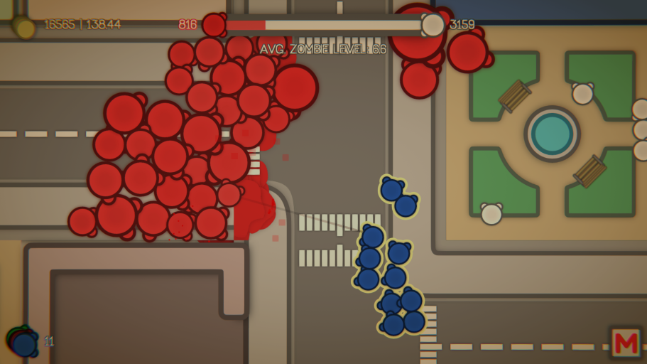 | ApocalypseZOZO |
|
I've made this game in two days with my friend for GMTK Game Jam 2020. The theme was "Out of Control". Map is randomly generated for premaded prefabs. The main goal is to save city from being transformed into zombie town. Enjoy! |
|
| 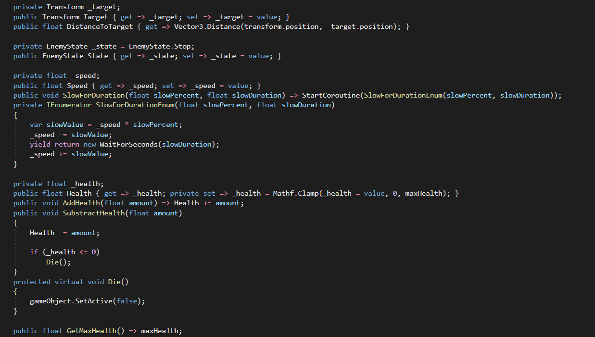 | Abstract Enemy Class |
|
That is an abstract class that I made on KrakJam 2021. I belive that It has a very good structure. A job of it was to handle basic enemy mechanics and let you to create diffrent enemies very eas. |
|
| 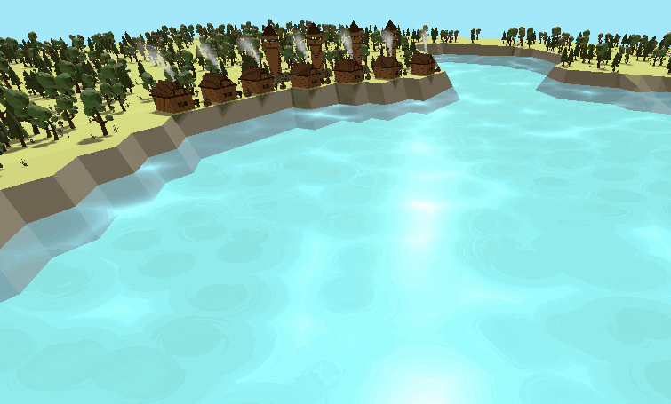 | Random Land |
|
This is random land generator based on Fast Noise library. Unfortunately, I don't have any code from this project. All the models you see in the icon were made by me in a blender. |
|
| 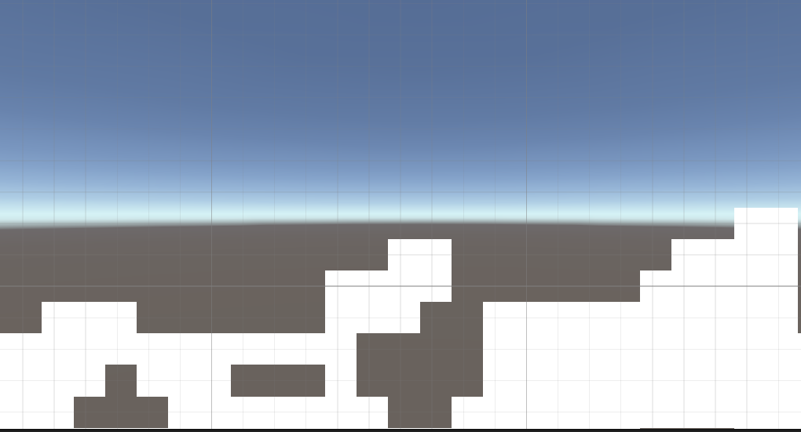 | 2D Random Map Generator |
|
This is random map generator based on Fast Noise library. This is only one script that has very good structure, I belive. I'm not good at 2D graphics, so I used only blank white sprites. |
|
| 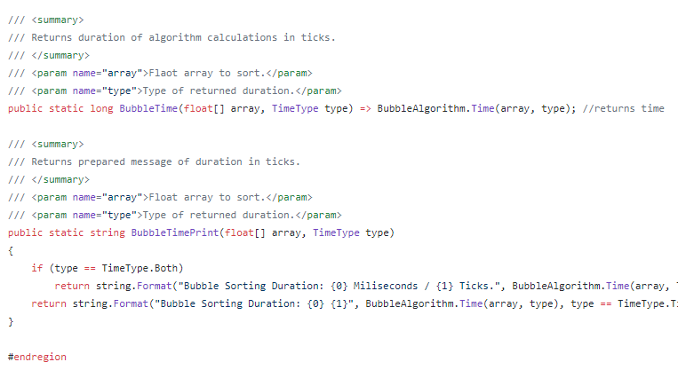 | Sorting Library |
|
That's a sorting library that I made in C#. It contains Quick Sort, Buble and Insert. I've made also unity implementation of it but i see no point of putting it there. |
| ApocalypseZOZO | |
|
I've made this game in two days with my friend for GMTK Game Jam 2020. The theme was "Out of Control". Map is randomly generated for premaded prefabs. The main goal is to save city from being transformed into zombie town. Enjoy! |
|
| 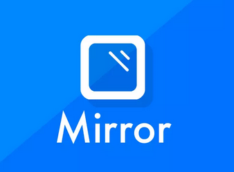 | GhostZERO |
|
It's unity adaptation of garry's mod's game "Hidden". I didn't really get even close to it but I added some mechanics and very good working looby. All project is powered by unity mirror. |
|
| 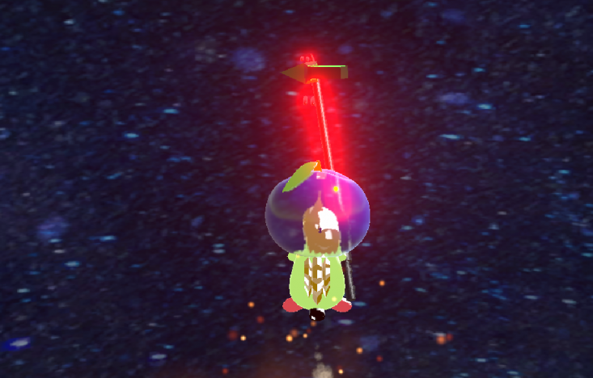 | Kosmiczny Jesz |
|
This game is not the perfect project if we are talking about gmae desing and balance, but I think that I wrote some of code very good here. This is project for KrakJam 2021. You just controll a hedgehog in the space and need to fight the enemies to reach an apple. |
|
 |
Minesweeper |
|
I've made a casual minesweeper in unity. All graphics are provided by my sister. |
|
| 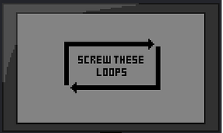 | Screw These Loops |
|
This game is for Ludum Dare 47 in 2020. I made this in a small team, where I was game desinger and only one programmer. I think this game is very fun to play tho. Theme was "Stuck in a Loop" |
| 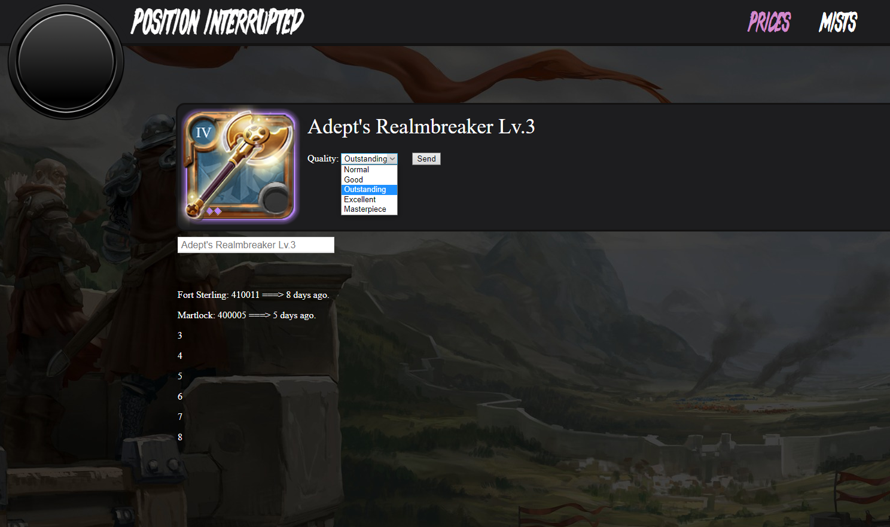 | Albion Guild's Page |
|
I've made this page in 3 days for my guild using NodeJS. It was my first try of creating pages. It use Albion Databse API that sends data in JSON. |
|
| 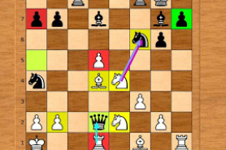 | Chess Engine |
|
This is half-tutorial based chess engine that I converted from C to C# and added some my features. It's using bit operations and advanced algorithms, but i used too much static fields here. I think the rating of this engine is about 1600. It's using UCI protocol to comunicate with UI. |
|
 |
Neural Network |
|
That's a sorting library that I made in C#. It contains Quick Sort, Buble and Insert. I've made also unity implementation of it but I see no point of putting it there. |
|
| 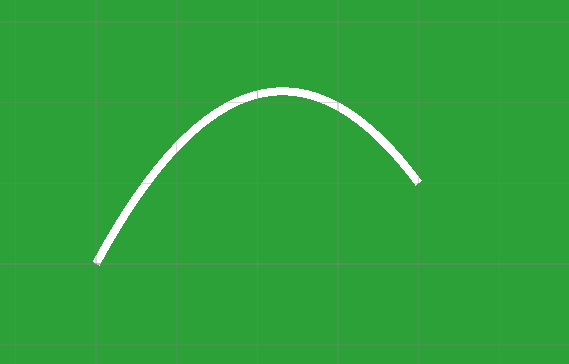 | Parabolic Line Generator |
|
This is a parabolic line generator that creates a line from A to B and it's powered by Unity. As an input u can provide an base multiplier that changes the angle of the line. You can also provide the number of the line segments, becouse it's using Line Renderer component. |
|
| Sorting Library | |
|
That's a sorting library that I made in C#. It contains Quick Sort, Buble and Insert. I've made also unity implementation of it but I see no point of putting it there. |
Contact
| Phone | (+48) 534 027 642 |
| tomasz.jaworski@gmail.com | |
| Address | ul.A11/3 Węgrzce, Kraków |